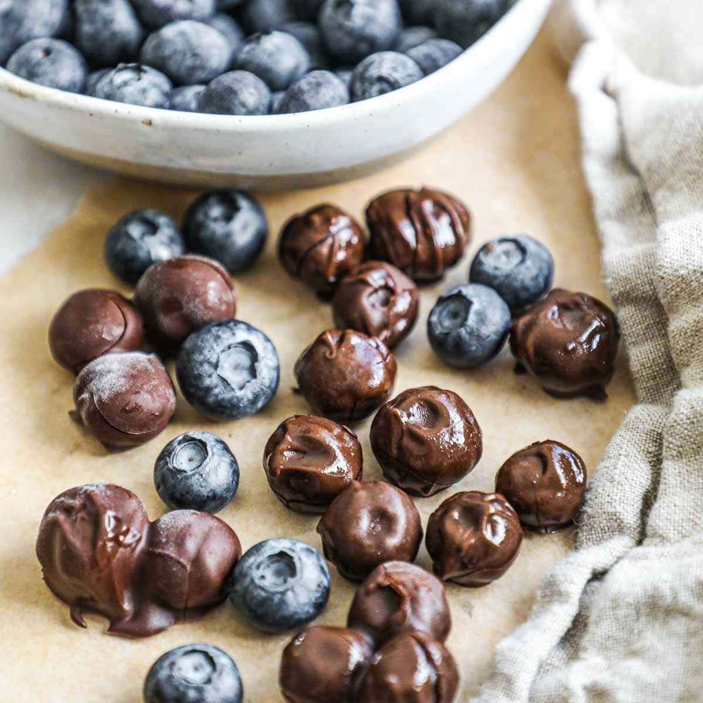

Chocolate Covered Blueberries
Chocolate Covered Blueberries are the perfect simple sweet treat to indulge in. With simple ingredients you can enjoy a healty but sweet option to enjoy.
Ingredients
- 1 cup fresh blueberries (washed and completely dried)
- 1 cup dark chocolate chips (or semi-sweet, milk, or white chocolate – your choice)
- 1 tsp coconut oil or vegetable oil (optional – for smoother chocolate)
Optional Ingredients
- Sea Salt for topping
- Crushed nuts
- Greek Yogurt
Instructions
- Prepare the Blueberries Rinse the blueberries and dry them thoroughly using paper towels. Any moisture will cause the chocolate to seize.
- Melt the Chocolate In a microwave-safe bowl, combine chocolate chips and coconut oil (if using).Microwave in 20-30 second intervals, stirring in between, until smooth and fully melted. Alternatively, melt the chocolate in a heatproof bowl over a pot of simmering water (double boiler method).
- Using a fork or toothpick, dip each blueberry (or a small cluster) into the melted chocolate. Let the excess chocolate drip off and place on a parchment-lined baking sheet.
- Before the chocolate sets, sprinkle lightly with sea salt, crushed nuts, or drizzle with white chocolate for decoration.
- Place the baking sheet in the refrigerator for about 15–30 minutes, or until the chocolate is firm.
- Enjoy immediately or store in an airtight container in the fridge for up to 3–4 days.